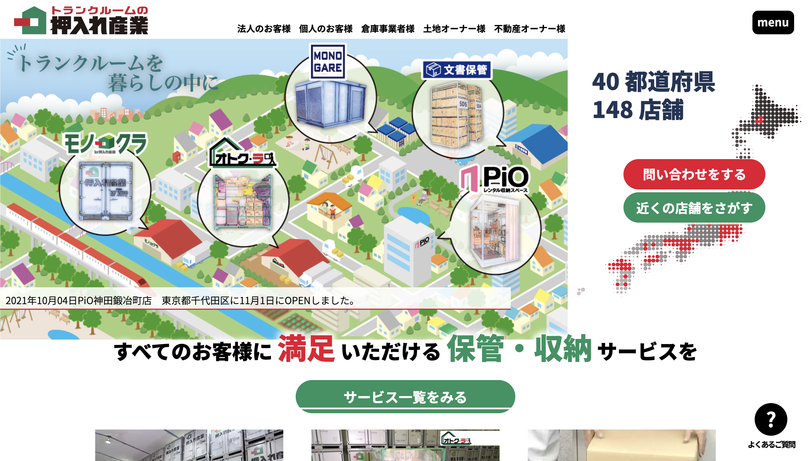
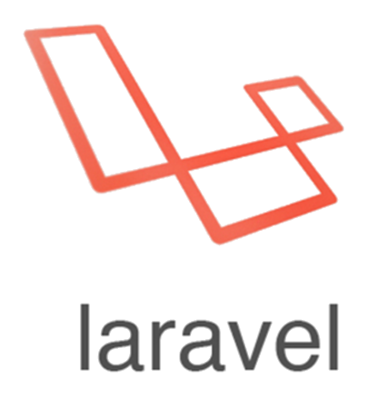

PORTFOLIO
ご覧いただき、ありがとうございます！
過去の制作事例や得意な技術要素を紹介しております。
WORKS
-
倉庫企業コーポレートサイト
-
BtoBマッチングサービス
-
倉庫企業マッチングシステム
-
倉庫企業マッチングシステム
PROFILE
2020年よりWEBアプリケーションエンジニアとしてIT業界に従事しております。
受託案件で、PHPやJavaでメジャーなフレームワークを用いた開発の経験がございます。
SLILL

HTML5

CSS

Javascript

jQuery

Wordpress

PHP

Laravel

CodeIgniter

Java

SpringBoot

MySQL

Docker

GitHub

Postman

Bootstrap

Materialise
CONTACT
お仕事のご依頼はこちらからお願いします。
倉庫企業コーポレートサイトリニューアル(受託)
HTML5
CSS
Javascript
jQuery
Wordpress
PHP
- 
Laravel
MySQL
■担当フェーズ
仕様調整・開発・テスト・本番リリース・保守
■詳細
約40画面のコーポレートサイトのリニューアルを実施。
フレームワークを使用した開発業務に加え、オープンソースのCMS連携やプラグイン選定、解析・機能カスタマイズを行いました。
クライアントと詳細なコミュニケーションを行いながら、ユーザービリティーの検討をしつつ開発タスクを実施しました。
BtoBマッチングサービス新規構築(受託)
HTML5
CSS
Javascript
jQuery
PHP
Laravel
MySQL
■担当フェーズ
仕様調整・開発・テスト・本番リリース・保守
■詳細
約40画面のコーポレートサイトのリニューアルを実施。
フレームワークを使用した開発業務に加え、オープンソースのCMS連携やプラグイン選定、解析・機能カスタマイズを行いました。
クライアントと詳細なコミュニケーションを行いながら、ユーザービリティーの検討をしつつ開発タスクを実施しました。